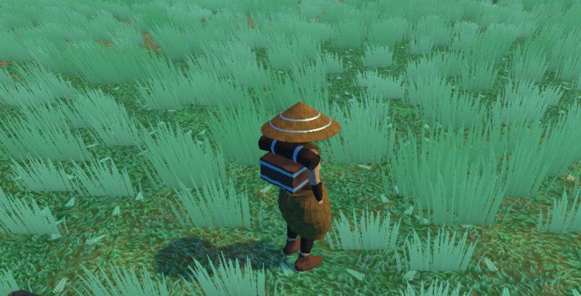
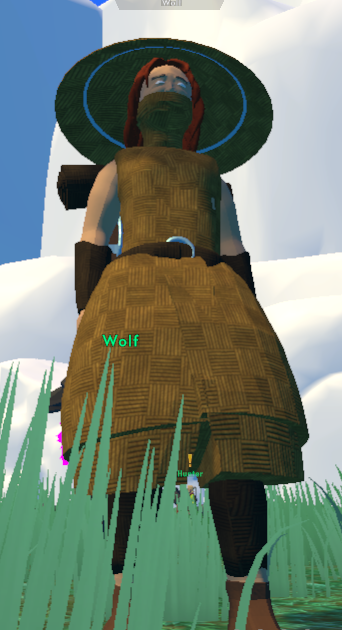

Gamedev log 1#
Ahoj. Jak to celé začlo? Hry jsou prostě součástí mého života už od začátku. Postupem času jsem ale přestal být jen konzumentem a začal se zajímat o jejich vývoj. V současnosti už tak nějak dva roky zkouším pracovat v programech Unity a Unreal Engine 4. Logickým krokem se taky stala práce v Blenderu na vlastních modelech. I přesto, že tedy nějaký background mám, tak jsem v této práci poměrně nováček a hry se tvoří klidně několik let. Máme tedy před sebou hodně práce a hodně čtení.
Tady se můžete mrknout na ukázku modelu postavy v Blenderu:

Každý článek něco usefull?
I v této sekci se budu snažit vždy přidávat ke článkům něco zajímavého.
Dneska se podíváme na několik screenů ze hry. Vzhledem k tomu, že nejsem schopný programátor, tak využívám pro začátek a jako takovou knihovnu scriptů RPG Builder od firmy Blink, což je asset bundle do programu Unity. Pomocí něho jsem rozchodil svůj model postavy a posílám několik screenů přímo ze hry. A ta užitečná část bude právě doporučení tohoto assetu. Na další díl si nachystám sérii doporučení pro přípravu právě tohoto modelu, které jsem nasbíral v celkově asi měsíční práci na něm a to od modelování po přípravu textur, animační kostry, či nanášení váhy pro equipment systém.
 